|
在立花家的紅贄祭失敗後，黑澤八重和黑澤紗重雖然順利的逃出了皆神村，然而逃亡途中紗重滑落山谷，因而與八重失散。直到八重發現和紗重分散時卻為了找紗重而迷路。此時遵守著和樹月的約定再次拜訪村子的宗方良藏，在村子入口處找到正在哭泣的八重，由於受到立花樹月的託付，於是宗方良藏照顧著受到刺激而失憶的八重，在相處的期間兩人結為連理並生下女兒宗方美琴。
|
| 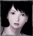 | 天倉澪 | | あまくら みお Mio Amakura | CV: 神田朱未 | | 本遊戲的主角。為雙胞胎中的妹妹，性格活潑，要幫助腳有問題的姐姐逃出「在地圖上消失的村落」。靈感力比繭弱，但只要和繭有接觸，就可以看到不應該看到的東西。一直以來的努力到最後卻換來… |
| 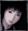 | 天倉繭 | | あまくら まゆ Mayu Amakura | CV: 川澄綾子 | | 十五歲，澪的姐姐。跟孖生妹妹的性格不同，個性沉穩，靈感力強，可以看見不存在的東西，一個人行動時易被靈魂附身。小時候與澪到山上遊玩因為失足摔落山腳，而導致腳受傷，所以不太能走遠路。 |
| 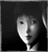 | 黑澤八重 | | くろさわ やえ Yae Kurosawa | | | 皆神村最後一對「雙子巫女」中的姐姐。和紗重感情很好，所以不想舉行儀式親手殺死紗重。逃離村子時沒注意紗重跌倒受傷，直到發現和紗重分散時卻為找紗重而迷路，當到村子入口處時村子卻不見了。 |
| 黑澤紗重 | | くろさわ さえ Sae Kurosawa | CV: 川澄绫子 | | 皆神村最後一對「雙子巫女」中的妹妹。體質較差，和八重逃離村子時因跌倒而被村民抓住，深信姐姐一定會回來找她，但最後八重還是沒有回到村子。目擊樹月之死的她對活著感到絕望，決定進行儀式。 |
| 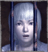 | 立花樹月 | | たちばな いつき Itsuki Tachibana | CV: 保志總一朗 | | 白髮男子。由於和睦月的紅贄祭失敗，所以必須再次舉行陽祭，而下一對雙子就是八重和紗重。由於曾與弟弟約定不讓她們犧牲，儀式結束後就幫助二人逃走。最後得知她們逃走後便了無牽掛在藏裡自殺。 |
| 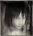 | 立花睦月 | | たちばな むつき Mutsuki Tachibana | | | 皆神村中的一對「雙子御子」中的弟弟。對哥哥說過無論發生什麼事情都會原諒他。與樹月約定不要讓同樣的事再發生在另一對雙子身上。但是舉行儀式後，由於樹月對他過度想念而導致陽祭失敗。 |
| 立花千歲 | | たちばな ちとせ Chitose Tachibana | CV: 米本千珠 | | 睦月和樹月的妹妹。對哥哥十分依賴加上先天視力不良，所以缺乏安全感而非常怕陌生人。大償時因為害怕所以躲進櫃子而死在櫃子裡。認為八重是害哥哥被關起來的人，所以以為澪就是八重而對澪攻擊。 |
| 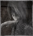 | 桐生善達 | | きりゅう よしたつ Yoshitatsu Kiryu | | | 桐生茜和薊的父親。身為人偶師的他不忍心看到女兒傷心而做一個人偶給茜。當發現人偶變成軀後便打算把它毀了軀殼再丟進虛裡。一直愧疚不應該在薊變成紅蝶後做出人偶。最後被受軀操縱的女兒殺死。 |
| 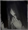 | 桐生茜 | | きりゅう あかね Akane Kiryu | | | 桐生薊的姐姐。儀式後的她無時無刻不和人偶在一起。可是人偶最後卻被其他惡靈附身變成軀，她們的父親決定將人偶丟進虛裡。當知道父親要再次殺死自己的妹妹時，覺得自己不可再允許那種事情發生。 |
| 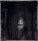 | 桐生薊 | | きりゅう あざみ Azami Kiryu | | | 當桐生茜殺死薊後痛苦萬分，於是她們的父親做了個和薊真人樣貌高度相同人偶給茜。薊認為已經和姐姐合而為一所以不再需要人偶。當茜受到軀的操縱時，薊的靈反而在暗中幫助父親。 |
| 黑澤良寬 | | くろさわ りょかん Ryokan Kurosawa | | | 黑澤八重和紗重的父親。他是黑澤家的當主，亦是皆神村村長。在很久以前完成紅贄祭儀式而變成鬼隻。為暫時鎮壓虛而把真壁清次郎當成陰祭的生贄。為村子着想的他認為必須抓回女兒完成下一次陽祭。 |
| 真壁清次郎 | | まかべ せいじろう Seijiro Makabe | | | 調查皆神村中紅贄祭的民俗學者。到達皆神村時正要舉行陰祭，而舉行陰祭時若有客人到來就會把客人變成生贄「楔」，於是選中真壁。因此被處以削身儀式，大償時和紗重一起從虛出現殺死全村的人。 |
| 宗方良藏 | | むなかた りょうぞう Ryozo Munakuta | | | 民俗學者真壁清次郎的助手，樹月的好友。因此而得知有祕祭一事，向真壁提議前往調查。受樹月之託幫助八重和紗重。再度到皆神村時發現村子不見了，只看到站在村子外哭泣的黑澤八重。 |
| 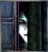 | 須堂美也子 | | すど みやこ Miyako Sudo | | | 槙村真澄的女朋友。在知道真澄在調查時失蹤後便在附近找他，結果也誤入皆神村中。在皆神村中無意間遇到真澄後留在逄坂家等待真澄回來。最後在重逢時一直跟着他走到奧之間卻被真澄突然轉身殺死。 |
| 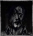 | 槙村真澄 | | まきむら ますみ Masumi Makimura | | | 被派遣至即計畫興建的「水神水壩」做地質調查時失蹤。誤入皆神村後開始調查村子裡的事情，獨自找尋離開村子時不幸地在黑澤家的納戶被楔殺死。即使死也想堅守承諾回逄坂家把重要東西交給美也子。 |
| 麻生 ( 天倉 ) 操 | | あそう ( あまくら ) みさお Misao ( Amakura ) Aso | | | 主角們的父親。本姓「麻生」，是開發射影機的麻生邦彥之末裔。和靜一樣出生於皆神村附近的深山村落，因討厭麻生的姓而入贅天倉家，在深山搜索失蹤的澪和繭時在皆神村附近行蹤不明。 |
| 天倉靜 | | あまくら しず Shizuka Amakura | | | 主角們的母親，沒有靈力。由於在皆神村附近的深山村落出生，從小就聽說「從地圖消失的村莊」的傳聞。因為不喜歡聽到操的失蹤和雙子的女兒有關的傳聞，帶著澪和繭離開村莊來到都會生活。 |
| 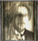 | 麻生邦彥 | | あそう くにひこ Kunihiko Aso | | | 江戶至明治初期的科學家，發明可以拍攝異界的射影機。由於進行靈界相關的研究，被學會視為異端。以響石耳飾發明靈石收音機，後來把試作型射影機和靈石收音機借給朋友真壁清次郎到皆神村拍攝紅贅祭。曾到朧月館作客，發現面具工匠所用的塗料能進一步改良射影機。接著持續在各地調查，最後在冰室邸研究將靈體完全封印的方法時身亡。 |
|
|
備註：在紅贄祭中，先生的雙子將會被定義為妹妹，後生的便是姐姐。因為他們相信後生會因為先生的比較弱而給她們先出世。所以在儀式中都會由後生去殺先生的雙子。但是套用現代邏輯中先生的是姐姐 ( 天倉繭 )，後生是妹妹 ( 天倉澪 )。但是黑澤八重和黑澤紗重剛好相反，她們倆是以儀式作為定義，所以稱八重是姐姐，紗重是妹妹。但實際上紗重才是姐姐，八重才是妹妹。至於立花家，睦月是樹月的弟弟，但實際上樹月才是弟弟，而桐生姐妹也是一樣。簡單一點，在儀式中天倉澪將會變成姐姐，天倉繭變成妹妹。詳情…
|